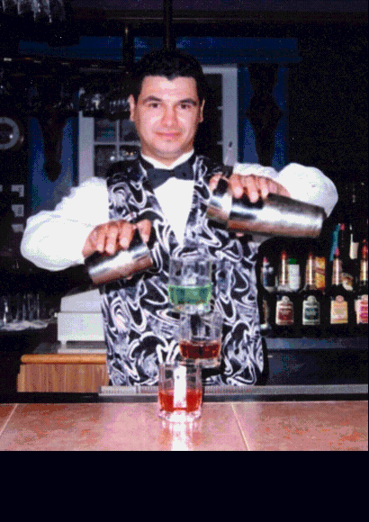
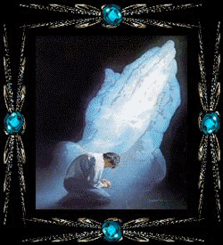

HALLO! Ich hoffe du bist gut angekommen?
Falls es heute ruhiger wird habe ich dir noch ein Kartenspiel fuer den Zeitvertreib dagelassen.
Ich wuensche dir eine wunderschoene Schicht und viel Trinkgeld!
 <---- Du und Gute Drinks! ---->

bin mir noch nicht sicher ob Webseiten als Ersatz fuer Post-it Notes nette Briefchen funktionieren